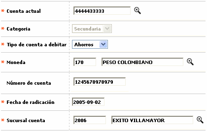

Novedad cambio cuenta
Mediante esta opción que se invoca desde Generación de novedades débito se registra la novedad mediante la cual se hace el cambio de una cuenta por otra.
La cuenta cambiada conserva la misma categoría que tenía la cuenta original seleccionada.

Descripción de campos
Cuenta actual |
Campo obligatorio con lista de valores de la que se selecciona la cuenta que se desea cambiar. |
Categoría |
En este campo de salida se muestra la categoría correspondiente a la cuenta seleccionada. |
Tipo cuenta a debitar |
Campo obligatorio tipo combo en el que se selecciona entre Ahorros, Corriente o Rotativo el tipo de cuenta asociado con la cuenta a cambiar. |
Moneda |
En este campo obligatorio con lista de valores, se selecciona la moneda en la que se encuentra denominada la cuenta que se va a cambiar. |
Número de cuenta |
Campo obligatorio de hasta 16 posiciones en el que se registra el nuevo el número de la cuenta a cambiar. |
Fecha radicación |
En este campo obligatorio se registra en formato YYYY-MM-DD la fecha en la que se ingresa la novedad en el sistema. |
Sucursal cuenta |
Campo obligatorio con lista de valores que permite seleccionar la sucursal de la entidad a la que pertence la cuenta que se va a cambiar. |